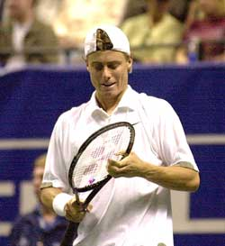
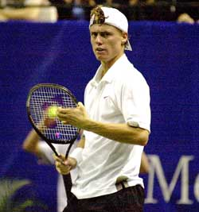

Previous: Love the Battle: Rafael Nadal | 🏠 Mental Game Home | Next: Match Preparation
Mastering Your Choking Response
Comprehensive unified tennis knowledge base — Fundamentals, Stroke Analysis, Reference Library, and more
Mastering Your Choking Response
By Jim Loehr
"Choking." Probably the most dreaded word in tennis. There was a time when players and coaches didn't even say the word, for fear they could spread the choking response like a virus.
Choking is a biochemical event, not a character flaw.
Today, we know enough to say that, without doubt, choking is not a character flaw or some permanent disability that isn't possible to overcome. There is hope, even if you've been prone to choking throughout your tennis life, you can overcome it.
The fact is that even the greatest players in the world occasionally choke. The difference is really one of degree. They just do it far less frequently.
Below the highest levels in tennis, however, choking is probably the norm in pressure situations. This is why watching pro tennis is deceptive. The average player sees that the great players rarely choke and expects to perform in the same way. But what you are seeing is the exception, not the rule.
One of the most common questions every teaching pro is asked is "why do I always miss easy shots?" But a better question is, if those shots are so easy, why do so many players miss them so much of the time?
Again, the great players are the exception. One of the things that makes them great is that they have, for the most part, mastered their own choking response.
But what exactly is the choking response? More importantly, how do you learn to master it yourself? Research in sports science shows us that choking is not a character weakness, but rather a highly specific physiological, biochemical state in your body.
When you choke your breathing gets shorter and so do your strokes.
When you choke in tennis matches, your body's most primitive response mechanism has been triggered. Fear -- the fight or flight response.
Choking is a biochemical event that can happen to anyone. When we choke, it is because we perceive the situation on the court as highly threatening. We equate losing and winning with the significant loss or gain in self-esteem.
This triggers the release of stress hormones in our body that cause heart rate and sweat production and muscle tension to increase. In a physiological sense, we perceive the situation as literally life threatening, so we become afraid.
Your breathing gets shallow, your strokes get shorter, and your mind can start to race with negative thoughts (for more on the critical role of breathing click here).
Tennis requires delicate motor control and adrenalin levels that are only slightly above normal levels. Once the fight or flight response has been activated, your Ideal Performance State (IPS) is impossible to achieve or sustain. (For more on IPS, see Part 1 in this series).
But there is a solution to allow you to tame this response. This alternative to the choking response is what we call the "challenge response."
The challenge response means learning how to view the stress of competition, not as threatening, but rather as stimulating. It means learning to love the competitive battle, to enjoy the problems that are part of the process, no matter how crazy or difficult things get on the court.

Learn to view competition as stimulating rather than threatening.
It means learning to fuel your performance from your positive emotions, playing with the feeling of optimism, enthusiasm, fun and determination. It means learning how to create your own IPS at will.
Controlling Your Choking Response
Controlling your own choking response is not some in born genetic talent, it's a learned skill. Here are the steps you can follow to learn to develop the challenge response and reduce or eliminate choking from your game.
First, you can't just set out not to choke in a particular match. If you become obsessed with not choking, it is almost certain you will choke. Remember, choking is a normal human response to pressure.
Your attitude should be, if you choke, you choke. It's okay. And then let it go. Stay positive and move on.
Second, set performance, rather than outcome, goals for your matches. Examples of outcome goals are to win a specific tournament or a specific match or never lose to a specific player.
You cannot completely control outcome goals. Setting these kinds of goals create expectations that lead to choking.
Performance goals, on the other hand, allow you to maintain feelings of control and confidence. Performance goals include giving a hundred percent during your matches, looking strong and confident under stress, staying aggressive under pressure, and viewing adversity as a challenge and problem-solving opportunity.

No matter how you feel, project the image of a strong, confident fighter.
Performance goals allow you to find success in your losses and to facilitate the growth of confidence. Make your motto, win or lose, another step forward. With this attitude, it is far less likely that your fear survival response will be triggered on court during match play.
A third aspect to overcoming choking is increasing confidence in key technical skills. Develop a second serve that rarely fails under pressure. To be a great pressure player, you should have a second serve that can be hit aggressively and with consistency.
In addition, retool any other stroke that consistently fails you under pressure. Sometimes the problem is technical, rather than mental. A good test of the technical strength of your strokes is how they hold up when you are nervous. A stroke that collapses needs more physical work.
Understand that replacing the choking response with a challenge response is not something that will happen overnight. It is a process of change that will take place in increments over time.
As you work to respond to pressure in a positive way, there will be many times during matches that you will still be nervous. Acknowledge how you feel, but don't show it with your physical body.
Continue to project the image of a strong and confident fighter. Practice the stages of mentally tough behavior between points. In fact, take even more time between points. Get more ritualistic in your preparation to serve or to return serve.
Pay attention to the patterns of your breathing and make sure you are exhaling smoothly through the hit. Make sure that you take several deep breaths and at least one deep breath before the start of each point.
Try to laugh at your mistakes. If you can see the humor in the situation, it will allow you to stay positive.
Accept what has happened and walk away from it with a smile. These techniques will allow your IPS to return.
Here is an example from the 2002 Open. In a tiebreaker in his tight 5 set match with Greg Rusedski, Pete Sampras missed an extremely easy overhead that would have given him a 5-0 and probably insurmountable lead. After the miss, Pete smiled, laughed, turned and walked away.
He didn't allow the miss to affect him. Even though Rusedski came back to make the breaker close, Pete maintained his positive approach and won both the breaker and the match. That match was a watershed for Pete, and the rest is history as he went on to take his fourteenth Grand Slam title.
The message here is: Don't berate yourself with negative self-talk. For many players, the first error is not the problem. Instead, the emotional abuse they heap on themselves when they choke is what really perpetuates the negative cycle.
Give yourself a key phrase, such as, "only the ball." If you find yourself engaging in negative self-talk, say to yourself, let it go, and focus on the next point.
Focus on each point, one at a time. During the point, there should be no past or future, only the present. In this framework, every point is of the same importance, and this reduces pressure.
Under pressure stay aggressive and execute your game plan.
Don't try to think in words about what you're trying to do technically on the court or how to correct errors. Instead, think in pictures. Visualize how you want to hit a specific shot.
Stick with your game plan. You should prepare for each match with a game plan that has several options. Your goal is to play high percentage, aggressive tennis. This means making a minimum of unforced errors on your part, combined with constant pressure on your opponent.
A common response to increased pressure is to stop playing aggressively and to push, although pushing can win you some matches in the short run, in the long run, it inhibits your full development as a player.
When you are nervous, stay with what you set out to do in the match. If one aspect of your game plan is clearly not working, try another. But, in the long run, it's better to play the way you want to play and lose than to compromise your development for the sake of that one match.
Finally, learn to transform the energy you are feeling into a positive source of motivation. Use the increased pressure you feel as a way to get inspired.
What's the point of playing tennis if it's not fun?
Choose to feel the pressure as excitement and transform it into productive energy. Learn to love pressure situations.
They are the chance to make something happen, to come up with a great shot, to raise your game to a new level. If you love the situation, choking is out of the question.
Above all, decide to have fun. Fun is a central aspect of IPS. This simple change in attitude can make all the difference. Tennis is a game. When you stop to think about it, what is the point of playing, if not for the enjoyment?
This means enjoying the great exercise, the physical pleasure of hitting the tennis ball and the competitive struggle.
Most players believe they have to win to have fun. But, actually, they have it reversed. Winning is a by product to the right attitude toward the game. Challenge yourself to have fun each and every time you go onto the court.

Jim Loehr is a legendary pioneer in the field of human performance. An elite tennis player himself who still competes nationally in USTA events, Jim created the field of Mental Toughness training with his revolutionary study of elite pro players. He has been one of the most influential voices in tennis and tennis coaching for over 30 years, and is the author of multiple best selling books.
He has expanded his influence far beyond sports with the creation of the Human Performance Institute where he and his staff have worked with hundreds of leaders in business, law enforcement, and military special forces. For the last decade he has also directed an academy for junior players helping young people learn what winning in life really means.
Source: tennisplayer.net archive — Mastering Your Choking Response.docx (John Yandell teaching library, 2002-2022). Extracted and rendered as HTML for Tennis Future Lab.